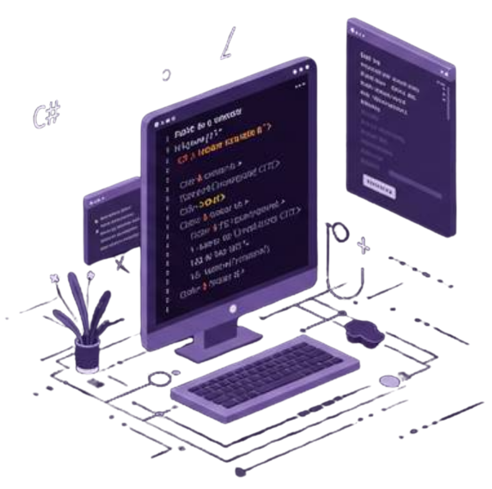

Building technology that solves real problems
Hello! I'm Noemi, a Computer Engineering student from Brazil and an IT Intern focused on technology, innovation, and continuous learning.
Currently, I work on digital transformation initiatives while also developing web projects, including solutions for academic and robotics teams. I enjoy combining technology, problem-solving, and user-centered design to create efficient and meaningful applications.